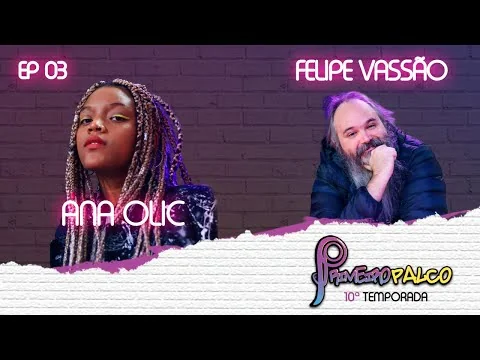

Programa musical · 2022
Primeiro Palco

O projeto
Programa musical com entrevistas, dinâmicas e quadros sobre música e processos criativos.
Minha participação
Atuei como diretora de pauta e diretora do switcher, na organização dos conteúdos e na coordenação técnica da transmissão.
Projeto acadêmico da FAPCOM.
Janeiro a julho de 2022